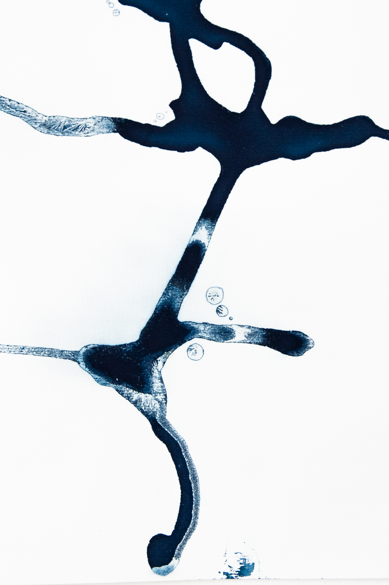
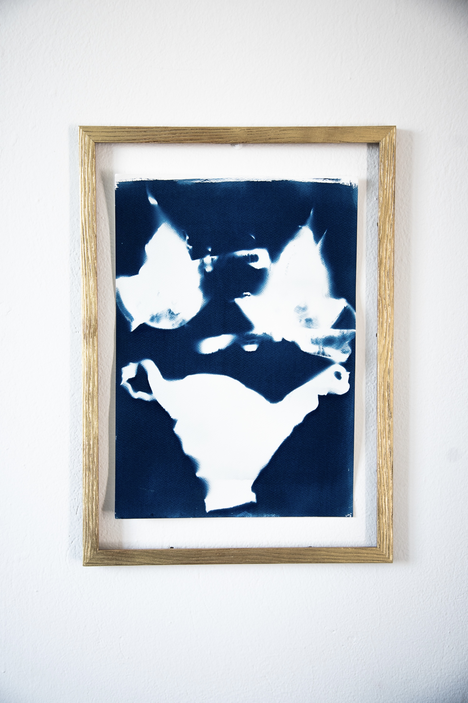

When a project
doesn’t know what it is,
we give it form.
BluCineLab works at the intersection of image, space and narrative — when a project needs direction, not just production.
We intervene when something is undefined: positioning, language, presence.
Studio
BluCineLab operates as a visual and narrative system.
We are most effective when a project needs to define its direction: how it appears, how it speaks, how it exists over time.
Our work moves across creation, design, production and strategy — not as separate phases, but as one continuous structure.
We are not needed when things are already clear. We are needed when they are not.
Work
Four areas, one system: each project activates a different combination.
Creation
Concept, visual language, narrative foundation.
Design
Form, structure, perception.
Production
Execution across media and formats.
Strategy
Positioning, coherence, long-term presence.
A method built to maintain clarity across complexity.
Each phase informs the next. Nothing is isolated.
Material traces.
Not explanations.


Not part of the system. Still necessary.